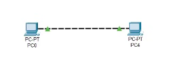
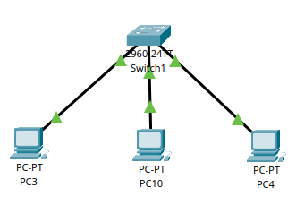
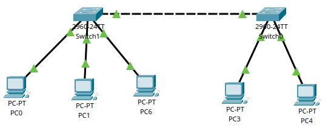
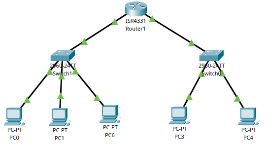
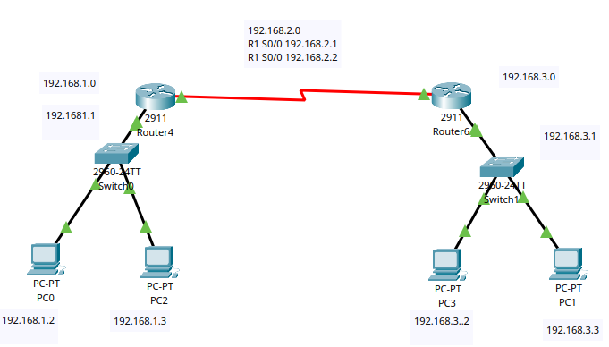
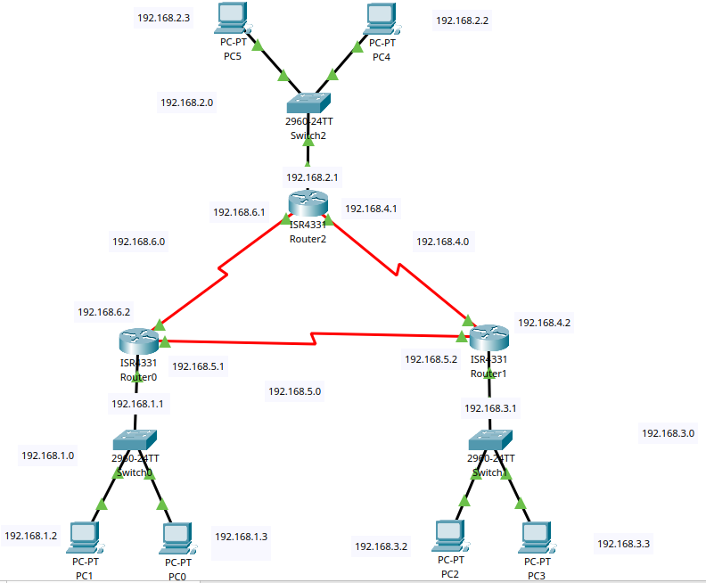
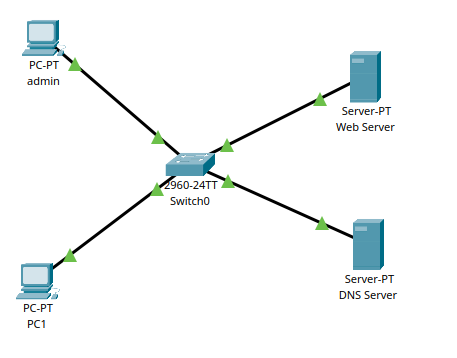
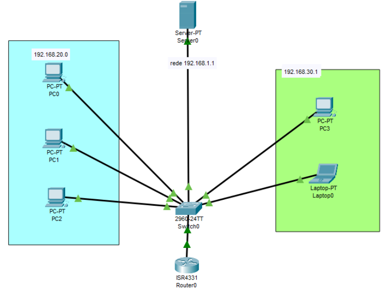

Introdução ao Cisco Packet Tracer
1. O que é:
O Cisco Packet Tracer é um simulador de redes desenvolvido pela Cisco que possibilita simular sem precisar do hardware físico.Ele permite criar topologias de rede virtuais, testar configurações e simular o comportamento de dispositivos de rede como:
- Roteadores
- Switches
- Computadores (PCs e laptops)
- Servidores
- Dispositivos móveis
2. Passos básico:
2.1 Adicionar dispositivos
- PC ou Laptop: Simula um computador na rede;
- Switch: Permite conectar múltiplos dispositivos na mesma rede local (LAN);
- Roteador: Permite a comunicação entre redes diferentes (WAN ou sub-redes);
2.2 Configuração de IP
- Cada PC deve ter um IP único dentro da mesma rede/sub-rede do switch ou roteador;
- Configure o gateway padrão no PC, apontando para o IP do roteador;
2.3 Testar conectividade
2.3.1 Por terminal*
- Ir em um PC/desktop/command prompt;
- Colocar ping + Ip do PC de onde quer testar;
ping 192.168.1.2
// vai aparecer algo assim caso der certo
Reply from 192.168.1.2: bytes=32 time<1ms TTL=128
Reply from 192.168.1.2: bytes=32 time<1ms TTL=128
Reply from 192.168.1.2: bytes=32 time<1ms TTL=128
Reply from 192.168.1.2: bytes=32 time<1ms TTL=128
Ping statistics for 192.168.1.2:
Packets: Sent = 4, Received = 4, Lost = 0 (0% loss),
Approximate round trip times in milli-seconds:
Minimum = 0ms, Maximum = 0ms, Average = 0ms
2.3.2 Por pacotes:
- Ícone de cartinha em cima, só clicar onde quer testar;
- Vai aparecer no canto inferior direito se deu certo ou não;
3. Comandos de Configuração Inicial
3.1 Configuração básica
enable # Acessa modo privilegiado
configure terminal # Acessa modo de configuração global
hostname NOME # Altera o nome do switch/roteador
banner motd #mensagem# # Mensagem
do show ip interface brief # Mostra resumo das entrada
exit # Sai da configuração global
3.2 Configuração de senha e login
enable
configure terminal
line console 0 # Acessa a porta de console
password SENHA # Define a senha
login # Força o login
enable secret SENHA # Para acessar o terminal
3.3 Salvando e reiniciando configurações
do copy running-config startup-config # Salva as alterações
do reload # Reinicia o equipamento
enable
erase startup-config # Apaga todas as informações salvas
n # Não salva ao apagar
3.4 Ajustes adicionais
enable
configure terminal
no ip domain lookup # Desativa a tradução de comandos inválidos
4. Topologias
4.1 Conectar dois computadores
- Conectar um cabo cross-over via fast-ethernet;
- Colocar um IP em cada um dos pcs (PC - Desktop - Ip Config);
- Ex: 192.168.1.1 e 192.168.1.2;
- Testar conexão;

4.2 Star Topology
- Todos os PCs se conectam e comunicam por um switch;
- Conectar cada PC com o switch com um cabo straight-throught;
- Demora um pouco para estabilizar;
- Colocar os IPs nos computadores;
- Testar a conexão;

4.3 Conexão entre dois switchs
- Criar a star topology 1;
- Criar a star topology 2;
- Conectar os switchs com o cabo cross-over via fast-ethernet;
- Testar a conexão

4.4 Conexão entre switchs com router
- Utilizar router sempre que os switches forem de sub-redes diferentes;
- Criar a star 1 com PCs de Ip 192.168.1.n e default gateway de 192.168.1.1
- Criar a star 2 com PCs de Ip 172.16.1.n e deafult gateway de 172.16.1.1
- Colocar como deafult gateway dos PCs o Ip da outra star;
- Conectar cada switch com o router atraves do gigaBitEthernet
- Conectar um Laptop e conectar no router com o cabo console via RS-232/Console
- Entrar no terminal do laptop e configurar router
- Acessar config/GigabitEthernet0 e colocar o Ip da star 1;
- Acessar config/GigabitEthernet0 e colocar o Ip da star 2;
- Deixar Port Status On nos dois;
- Testar conexão (primeiro com o ping;)
enable
configure terminal
interface GigabitEthernet0/0/0
ip address 192.168.1.1 255.255.255.0
no shutdown
exit
interface GigabitEthernet0/0/1
ip address 172.16.1.1 255.255.255.0
no shutdown
exit
copy running-config startup-config
reload

4.5 Conexão de dois routers
- Criar star 1 com router1
- net 192.168.1.0
- r1 192.168.1.1 (conectado g0/0 no sw1)
- pc1 192.168.1.2
- pc2 192.168.1.3
- Criar star 2 com router2
- net 192.168.3.0
- r1 192.168.3.1 (conectado g0/0 no sw2)
- pc1 192.168.3.2
- pc2 192.168.3.3
- Conectar os routers com cabo serial
- Addicionar o WIC neles antes
- no S0/0/0
- ip da rede 192.168.2.0
Configurar o r1:
enable
configure t
// adicionar o gateway da rede
interface g0/0
ip add 192.168.1.1 255.255.255.0
no shut
// adicionar a serial s0/0/0
interface s0/0/0
ip address 192.168.2.1 255.255.255.252
// adicionar a rota pra o r2
ip route 192.168.3.0 255.255.255.0 192.168.2.2
Configurar o r2:
enable
configure t
// adicionar o gateway da rede
interface g0/0
ip add 192.168.3.1 255.255.255.0
no shut
// adicionar a serial s0/0/0
interface s0/0/0
ip address 192.168.3.1 255.255.255.252
// adicionar a rota pra o r1
ip route 192.168.3.0 255.255.255.0 192.168.2.1

4.6 Três routers com triangulação
- Star 1 (192.168.1.0)
- r1 192.168.1.1 (conectado g0/0 no sw1)
- pc1 192.168.1.2 dhcp
- pc2 192.168.1.3 dhcp
- Star 2 (192.168.2.0)
- r1 192.168.2.1 (conectado g0/0 no sw2)
- pc1 192.168.2.2 dhcp
- pc2 192.168.2.3 dhcp
- Star 3 (192.168.3.0)
- r1 192.168.3.1 (conectado g0/0 no sw2)
- pc1 192.168.3.2 dhcp
- pc2 192.168.3.3 dhcp
- Conectar os routers com cabo serial
- Addicionar o WIC neles antes
- no S0/1/0 e S0/1/1
- Rede r3-r2 (192.168.4.0)
- Rede r1-r2 (192.168.5.0)
- Rede r3-r1 (192.168.6.0)
Configurar o r1:
// colocar o gateway
Router>en
Router#configure terminal
Router(config)#int g0/0/0
Router(config-if)#ip address 192.168.1.1 255.255.255.0
Router(config-if)#no shut
Router(config-if)#exit
// colocar o serial para o r3
Router(config-if)#exit
Router(config)#int s0/1/0
Router(config-if)#no shut
Router(config-if)#ip add 192.168.6.2 255.255.255.0
// colocar o serial para o r2
Router(config)#int s0/1/1
Router(config-if)#ip address 192.168.5.1 255.255.255.0
Router(config-if)#no shut
Router(config-if)#exit
// colocar o dhcp
Router(config)#ip dhcp pool dhcp
Router(dhcp-config)#default-router 192.168.1.1
Router(dhcp-config)#network 192.168.1.0 255.255.255.0
Router(dhcp-config)#exit
// colocar routes
Router(config)#ip route 192.168.2.0 255.255.255.0 192.168.6.1
Router(config)#ip route 192.168.3.0 255.255.255.0 192.168.5.2
Router(config)#exit
Configurar o r2:
// colocar o gateway
Router>en
Router#configure terminal
Router(config)#int g0/0/0
Router(config-if)#ip address 192.168.2.1 255.255.255.0
Router(config-if)#no shut
Router(config-if)#exit
// colocar o serial para o r1
Router(config-if)#exit
Router(config)#int s0/1/0
Router(config-if)#ip add 192.168.6.1 255.255.255.0
Router(config-if)#no shut
// colocar o serial para o r2
Router(config)#int s0/1/1
Router(config-if)#ip address 192.168.4.1 255.255.255.0
Router(config-if)#no shut
Router(config-if)#exit
// colocar dhcp
Router(config)#ip dhcp pool dhcp
Router(dhcp-config)#default-router 192.168.2.1
Router(dhcp-config)#network 192.168.168.2.0 255.255.255.0
// colocar routes
Router(config)#ip route 192.168.3.0 255.255.255.0 192.168.4.2
Router(config)#ip route 192.168.1.0 255.255.255.0 192.168.6.2
Router(config)#exit
Configurar o r3:
// colocar o gateway
Router>en
Router#configure terminal
Router(config)#int g0/0/0
Router(config-if)#ip address 192.168.3.1 255.255.255.0
Router(config-if)#no shut
Router(config-if)#exit
// colocar o serial para o r1
Router(config-if)#exit
Router(config)#int s0/1/0
Router(config-if)#ip add 192.168.5.2 255.255.255.0
Router(config-if)#no shut
// colocar o serial para o r3
Router(config)#int s0/1/1
Router(config-if)#ip address 192.168.4.2 255.255.255.0
Router(config-if)#no shut
// colocar dhcp
Router(config)#ip dhcp pool dhcp
Router(dhcp-config)#default-router 192.169.3.0
Router(dhcp-config)#network 192.168.3.0 255.255.255.0
// colocar routes
Router(config)#ip route 192.168.2.0 255.255.255.0 192.168.4.1
Router(config)#ip route 192.168.1.0 255.255.255.0 192.168.5.1
Router(config)#exit

4.6 DHCP Server
- Montar a star;
- Conectar o server no switch;
- Settar o ip do server (192.168.1.1);
- Acessar services/dhcp e colocar started ip address;
- Agora ir nos outros pcs em desktop/ipconfiguration e colocar dhcp;
- Vai aparecer automaticamente;
4.7 DHCP Server
- Montar a star com dois pcs;
- PC1: Ip 10.0.0.4 e DNS 10.0.0.1;
- PC2 (admin): Ip 10.0.0.5 e DNS 10.0.0.1;
- Conectar dois servers;
- Primeiro vai ser o Web Server com ip 10.0.0.1;
- Acessar services/HTTP/index.html e alterar;
- Segundo vai ser o DNS Server com ip 10.0.0.2;
- Acessar services/DNS;
- Deixar ligado;
- Adicionar um nome (unb) e ip 10.0.0.2;
- Agora se for em desktop/web browsere acessar unb.com vai abrir o web server;
- Ir no server dns e adicionar admin com ip 10.0.0.5;
- Agora consegue dar ping no pc1 com: ping admin;

4.8 VLAN
- Criar a star 1 (192.168.20.0);
- Criar a star 2 (192.168.30.0);
- conectar o servidor e o router;
- VLAN1: 192.168.1.1 (servidor dhcp)
Configurar o sw:
# criar a vlan A e vlan B
Switch>en
Switch#conf t
Switch(config)#vlan 2
Switch(config-vlan)#name A
Switch(config-vlan)#vlan 3
Switch(config-vlan)#name B
# Conecta o router e colocar no modo trunk
Switch(config-vlan)#interface gigabit 0/1
Switch(config-if)#sw mode trunk
Switch(config-if)#sw trunk allowed vlan all
Switch(config-if)#do wr
Switch(config-if)#exit
# atribuir os pcs da vlan A e vlan B
Switch(config)#interface range fa0/1-3
Switch(config-if-range)#sw access vlan 2
Switch(config-if-range)#exit
Switch(config)#interface range fa0/4-5
Switch(config-if-range)#sw access vlan 3
Switch(config-if-range)#exit
Switch(config)#do wr
Switch(config)#sh vlan brief
Configurar o router:
Router>en
Router#conf t
Router(config)#interface g0/0/0
Router(config-if)#no ip add
Router(config-if)#no shut
# cria a subinterface 0.1 para o serve
Router(config-if)#interface g0/0/0.1
Router(config-subif)#encapsulation dot1q 1
Router(config-subif)#ip add 192.168.1.1 255.255.255.0
Router(config-subif)#ip helper-address 192.168.1.2
Router(config-subif)#exit
# cria a subinterface 0.2 para vlan 20
Router(config-subif)#interface g0/0/0.2
Router(config-subif)#encapsulation dot1q 2
Router(config-subif)#ip add 192.168.20.1 255.255.255.0
Router(config-subif)#ip helper-address 192.168.1.2
Router(config-subif)#exit
# cria a subinterface 0.3 para vlan 30
Router(config)#interface g0/0/0.3
Router(config-subif)#encapsulation dot1q 3
Router(config-subif)#ip add 192.168.30.1 255.255.255.0
Router(config-subif)#ip helper-address 192.168.1.2
Router(config-subif)#exit
Router(config)#do wr

v